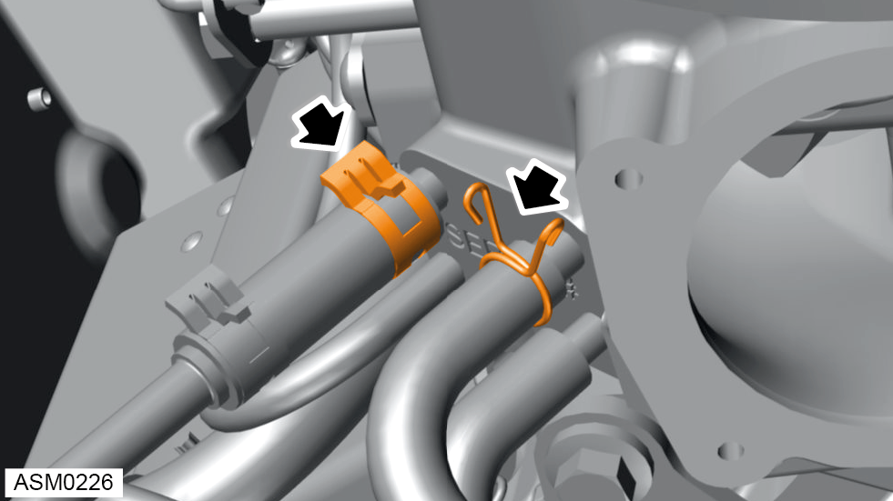
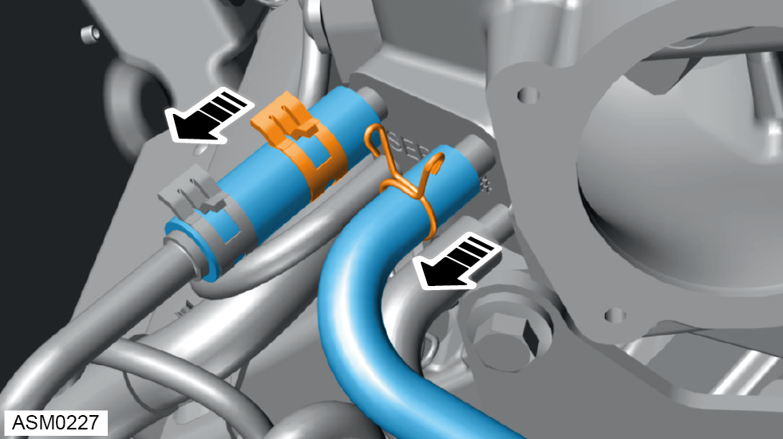
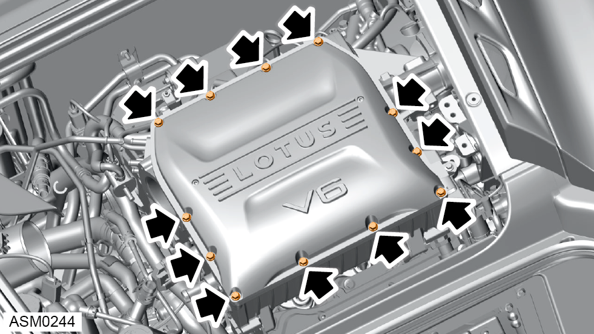
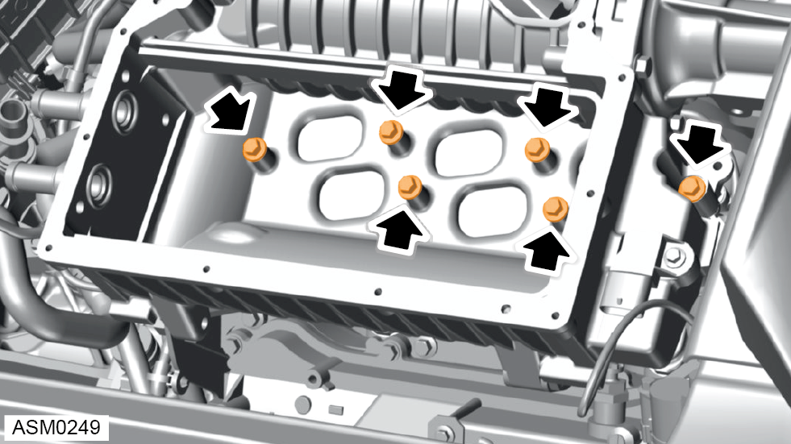

Supercharger Assembly - V6
Print
Operation Code: 42.09.01-02
Removal
- Remove engine bay trim cover rear. Refer to procedure.
- Remove rear wheel arch liner - right side.
NOTE: Procedure is the same for left side component.
- Rotate belt tensioner counter clockwise to relieve tension from drive belt.
NOTE: Vehicle not shown for clarity.
- Use allen key to lock tensioner in fully released position.
- Remove belt from supercharger pulley.
- Loosen hose clamps (x2) securing intake pipe to throttle body and Mass Airflow (MAF) sensor housing.
- Release hose clamp securing supercharger vacuum hose to intake pipe.
- Remove vacuum hose.
- Remove intake pipe.
- Disconnect harness connector from throttle body.
- Remove bolts (x4) securing throttle body to supercharger.
NOTE: Do not remove coolant bypass hoses. This is to prevent coolant loss.
- Remove throttle body.

- Release hose clamps (x2) securing brake vacuum servo hose and right side ventilation hose to supercharger.

- Remove vacuum hoses (X2) secured to supercharger.
- Remove evaporation hose secured to supercharger.
- Remove supercharger belt.
- Disconnect boost sensor connector from supercharger.
- Remove M10x35 bolt securing lower nose bracket to supercharger body. Torque 24 Nm.
- Release hose clamps (x2) securing charge cooler hoses to supercharger.
- Clamp charge cooler inlet and return hoses.
- Remove charge cooler hoses (x2) from supercharger.
NOTE: Place an absorbent material under the charge cooler hoses to prevent coolant spilling on electronic components.
- Remove M10x30 bolts (x2) securing lower nose bracket to pulley nose housing. Torque 45 Nm.
- Remove M8x35 bolts (x3) securing nose bracket to idler pulley bracket / intake manifold. Torque 24 Nm.
- Remove M8x25 bolts (x3) securing bracket to supercharger casing. Torque 24 Nm.
- Remove idler support bracket.
- Remove lower nose bracket.
- Remove M8x40 bolts (x2) from left side bank area securing bracket to supercharger casing. Torque 24 Nm.
- Remove M10x25 bolt securing bracket to supercharger casing. Torque 45 Nm.
- Remove M10x25 bolts (x2) from rear left side bank securing bracket to supercharger casing. Torque 45 Nm.
- Remove M6x12 bolts (x2) securing harness bracket to supercharger casing. Torque 10 Nm.
- Loosen but do not fully remove M6x12 bolt securing bracket to left side camshaft cover. Torque 10 Nm.
- Move bracket assembly aside.

- Remove M6x20 bolts (x12) securing cover to supercharger casing. Torque 10 Nm.
- Remove M6x40 bolts (x2) securing cover to supercharger casing. Torque 10 Nm.
- Remove supercharger cover and gasket.
- Remove bolts (x4) securing intercooler to supercharger casing.
NOTE: Push the front of the intercooler into coolant ports while removing the bolts to prevent coolant spillage.
- Remove intercooler.
 CAUTION: A small amount of coolant will remain in the intercooler, make sure coolant does not enter intake manifold. Tilt left side of intercooler upwards to prevent coolant draining into intake manifold.
CAUTION: A small amount of coolant will remain in the intercooler, make sure coolant does not enter intake manifold. Tilt left side of intercooler upwards to prevent coolant draining into intake manifold.
NOTE: Discard and replace O rings between intercooler and supercharger casing.
- Cover intake ports with tape to prevent foreign objects falling into the engine.

- Uniformly loosen and remove M6x45 bolts (x6) securing supercharger to intake manifold. Torque 10 Nm.
- Using assistance, remove supercharger assembly.
 WARNING: This component is heavy.
Removal/Installation is a two person
operation.
WARNING: This component is heavy.
Removal/Installation is a two person
operation.
CAUTION: Take care not to damage
component(s).
CAUTION: Make sure any ancillary components are clear of the supercharger before removal.
NOTE: Collect supercharger to intake manifold gasket.
Installation
- Installation is the reverse of removal procedure except for the following:
- Renew all discarded o rings and gaskets.
- Install bolts securing supercharger to intake manifold hand tight only.
- Install alignment gauge A132T0008S to supercharger pulleys and centralise supercharger belt.
CAUTION: Incorrect alignment of the supercharger to idler bracket pulley can result in belt squeal and premature wear.
NOTE: Ensure loose belt fit when removing the gauge.
- Torque bolts securing supercharger to intake manifold. Torque 10 Nm.
CAUTION: Make sure supercharger is aligned correctly before torqueing bolts.
- Install belt to supercharger pulley.
- Remove allen key.
- Check belt position.
- Rotate belt tensioner clockwise.
- Continue reassembly but do not refit engine covers.
- Remove coolant reservoir cap.
- Top up intercooler reservoir.
- Start and operate engine with intercooler cap removed.
NOTE: Run the engine with the reservoir cap off to bleed the system.
- Check and top up coolant level.
- Refit coolant reservoir cap.